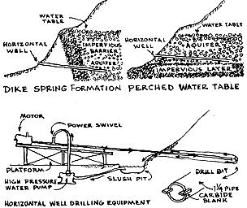

Water has come to be the most valuable resource to be found on the homestead. Its proper-or improper - development and use will make or break a homestead effort sooner than any other single factor. And yet for a resource of such import, there is a dearth of information!
Water is mankind's most wasted commodity. The water needs of a primitive savage - for drinking, cooking and occasional washing-have been estimated to be 1 gallon per day; the average modern city dweller uses 1,200 gallons per day. This includes his share of industrial and agricultural usage in the country and over the world. It takes, for instance, 65,000 gallons of water to produce one ton of steel; 225 gallons to produce an egg; and 550 gallons to grow the grain and produce a loaf of bread.
How the average homesteader sets out in search of water is more often than not the first indicator of ignorance on the subject. Despite knowledgeable scientific methods of water-well location, many people persist in the ancient superstitious belief in divining rods, or in the more modern electrical contrivance, to locate water. Water divining has long ago been proven to be nonsense, however honest water "witches" are in their belief that the working of the rod is influenced by electric currents following underground streams. An unconscious tightening of the grip on the divining rod (usually a simple forked willow branch) will always send the tip downward: the tighter one holds the branch the more it bends. Why the douser unconsciously tightens his grip can be explained by light muscular movements resulting from the unconscious adjustment of poise to compensate for the irregularities of the ground surface while walking.
Well location is best accomplished by groundwater exploration - in the library and on the ground. The U.S. is divided into 10 groundwater regions. Each region is further classified by the Water Resources Division of the U.S. Geological Survey (Department of the Interior). This department has amassed an impressive amount of information on groundwater supply. Most of it is based on geologic knowledge, but much public information on ground water resources comes from the actual well driller. Many states have laws pertaining to ground water, and require drillers to log every well, showing each layer of rock material penetrated. They also must show location and depth and quantity of water produced.
A water-seeking homesteader should acquaint himself with some of the geology of his region. Rocks are the most valuable clue for finding water aquifer (an aquifer is simply a layer of rock that carries the water). Geologic study is helpful for predicting the distribution, depth, and thickness of aquifers. The best aquifer is gravel, then followed by sand, sandstone, and limestone. In order for a well to be productive, it must penetrate materials saturated with usable water.
Much of this geologic exploration can be done from the ground surface. Topographic and geologic maps show general water features - from springs and streams to areas of outcrop and such structural features as geologic folds and faults. A rock body appearing at the surface can serve as either conduit or as barrier to water movement. An understanding of the geologic history of a region assists one in identifying such processes as weathering, erosion, sedimentation, compaction, volcanism and glaciation - all of which effect water storage.
In general, ground water follows precisely the same movement pattern as surface water. If the sides of an alluvial-filled valley are the same height, water is likely to be found in the middle; if one side is higher or steeper, water is more apt to be found near the steeper side. Artesian springs can be developed where primary and secondary valleys intersect. The head of a valley is a less likely location for an artesian spring. Remember, the average depth of all domestic wells in the U.S. is under 50 feet. About 90% of all ground water lies within 200 feet.
Plants and trees can also be reliable indicators of shallow-depth water, as illustrated in accompanying chart .
There is a final method of determining water location and requirement. It comes with an understanding of one's climatic environment in respect to the Hydrologic Cycle. Altitude of one's homestead, for instance, affects water needs. The higher the altitude, the less water is required for growing things. Rain and cloudy days, which occur at the heights up to 3,000 feet, reduce the evapotranspiration process. Also, at these higher altitudes, most precipitation falls as snow. This is good. For snow is stored on the ground during winter months for use in spring and summer. A southfacing slope will lose its snow as much as 30 days sooner than a north slope.
Topography can have a major effect on water distribution. Slopes facing the prevailing moisture-laden winds favor the lifting-cooling precipitation process. Slopes facing away from prevailing winds have drastically reduced precipitation. For example, a valley or slope on the leeward side of a mountain may be comparatively dry.
Without question, the first-choice homestead water facility is a gravity-fed spring or artesian well. If the spring can be located 20 or more feet in elevation above the homestead, moderate water pressure requirements can be met. Unfortunately, most springs are low producers - some sort of storage facility must be incorporated into the system.
Agricultural Engineer James Waller found that a spring emitting a trickle of water as little as 2 quarts per minute can be harnessed and stored to supply enough water for 35 head of cattle. This same amount is more than sufficient for average, homestead requirements.
Traditional water storage facilities have proven to be expensive and inadequate. In a few years a metal tank will rust and a wood tank will deteriorate. Neither can be installed underground - which is essential for the prevention of temperature rise and evaporation. Concrete is the best material to use in building a water storage tank. An underground concrete tank undergoes minimal damage and evaporation.
My earliest contribution to the owner-builder homestead technology has been the development of a low-cost, all-concrete circular reservoir. The foundation-floor of this tank consists of a single concrete slab. The roof is a 2-inch thick concrete folded-plate poured on expanded-metal lath, as illustrated in accompanying drawings. An owner-builder can fabricate this tank for about two cents a gallon of water stored.
If a natural spring or artesian well cannot be developed, a homesteader has the choice of digging, boring, driving, jetting or drilling into the ground for water. Each method, discussed briefly below, has its unique advantages, depending mostly upon the ease of penetration into the earth formation. One's State Geological Survey office will assist in determining what type of earth formation one is likely to encounter: just submit a legal description of your property.
Where the water table is fairly close to the ground surface, a well can be advantageously dug. Depths of from 10 to 40 feet are common. A circular hole, about 40-inches in diameter is usual: being round it is less apt to cave in. Except in cases of solid rock, dug wells require some form of permanent lining. Lining prevents collapse of the hole as well as supporting the pump platform and preventing entrance of contaminated surface water. One unique and practical method of digging deep wells (up to 200 feet) has been developed by the World Health Organization. The first 45 feet is cast-in-place concrete. A system of precast concrete cylinders are then lowered into the well and assembled together. They act as caissons: as earth is removed, the caissons drop lower, guided by upper-level castin-place lining.
Bored wells can also be constructed by hand labor, using a simple earth auger. The maximum practical depth is 50 feet, using a 6-8 inch diameter auger. Boring with an auger involves simply forcing auger blades into the soil while turning the tool. When the space between the blades is full of earth the auger is removed from the hole and emptied. As greater depth is attained sections are added to the auger. A pully-equipped tripod is necessary as greater depths are reached, so that the extended auger rod can be inserted and removed from the hole without unscrewing all sections of the pipe.
An American Friends Service Committee team in India devised a simple hand-operated boring auger. In place of a tripod, they built a 10-foot high elevated platform. Pipe lengths of 20 feet could easily be handled by one man perched on the platform.
Whereas an earth auger functions best in heavy soils - like clay - in coarse sand it may be advantageous to drive a well. Driven wells are usually 2-inches in diameter and less than 30 feet deep. If driving conditions are good, a 4-inch diameter casing can be driven to as deep as 50 feet. A driven well consists of a drive point connected to the lower end of a tightly-connected section of pipe. The drive point consists of a perforated pipe with a steel point at its lower end to break through the earth. Five-foot sections of pipe are used for the pipe "string"; they serve as casing for the completed well.
Driving may be done using a maul to strike a drive cap. A falling weight from a tripod, guided by the well pipe, can also be used. Another method is to use a steel driving bar attached to a rope, the bar falls freely inside the pipe and strikes the base of the drive point.
A jetted well involves the use of slightly more sophisticated equipment, yet it is a simple and dependable method accomplished entirely with hand tools. Simply stated, a well is drilled into the earth by the forces of a high-velocity stream of water. The stream washes fine particles of earth upward out of the hole, either by sinking a self jetting well point or washing in a casing.
A tripod hoist must be installed to support the drill pipe and casing.
It can also be used for dropping the drive weight on the pipe - which is done to penetrate clayey soil. A jetting pump capable of delivering 50-100 gallons per minute at 50 pounds pressure is used to fill the casing with water. The casing sinks by its own weight as the ground is washed out from beneath it. The casing is also rotated so that the teeth at the lower end will cut into the bottom of the hole. A straight bit is used to penetrate hard formations of earth that do not yield to the water jet.
A jetted well drilling operation can be mechanized by using a portable gasoline engine to rotate an earth or rock cutting bit. This rotary drill is especially useful for drilling horizontally into the side of a hill, for the development of artesian springs.
Where stone or hard formations are encountered wells must be drilled. Commercial well-drilling rigs are usually engaged for this work - either using a cable tool percussion or the hydraulic-rotary method. In the former case, the well is formed by the pounding and cutting action of a chisel-type drill bit alternatively raised and dropped. The bit is suspended from a cable. Water is added and the reciprocating motion of the drilling tool mixes the loosened material into a sludge that is then removed by a bailer tool.
The hydraulic-rotary method uses a rotating drill bit that is perforated. Water is pumped through the bit, then up and out the opening between bit and casing, washing the drill cuttings out at the same time.
A rock-drilling bit can be shop-fabricated from a 3-inch, 5-foot long bar of mild steel. The 90-degree cutting edge is hard surfaced with stellite. A bailing bucket must also be fabricated to remove loose soil.
Well development is t he next crucial stage of water well operation. In the process of developing the well, fine materials from formations near the well-point are removed. This opens passages so that more water can enter the well freely. Well yield may be increased by 50% as a result.
The increased yield depends much upon the type of well-point screen used, the spacing between screen openings, and the size of the screen opening. Openings should be large enough to allow finer materials to pass through, but in such a shape so they will not clog. In development, the direction of water flow is alternatively reversed, thereby forcing finer materials toward the screen and into the well. One device for this operation is a plunger-type block that is lowered into the casing. A surge action is created when this block is rapidly lowered and raised.
Back washing is also done to develop a well. A test pump is installed to stop and start at frequent intervals. A deep well turbine pump can be used to lift water rapidly to the surface and let it run back into the well through the pump column pipe. This action intermittently lowers and raises the water level through the screen opening.
Following well development procedures, well tests are made. Primarily the water yield test is made to determine proper pumping equipment. For this one needs to know the volume of water pumped per minute as well as the recovery of the water level after pumping is ceased. Where one has a source of flowing water-at least 3 gallons a minute with minimum 3-foot fall in altitude-a Hydraulic Ram can be used to advantage. The principle of the hydraulic ram is little known, despite the fact that it has been in use since 1800. The hydraulic ram is about the most perfect pumping machine invented. It runs entirely from the energy generated by flowing water. It will lift water as much as 500 feet, depending on the height of the fall (about 25 feet lift for each 12 inches of fall in altitude). Once the ram is installed there is minimal need for maintenance during its 30 or more years of constant service. The water must fall through a valve to an air chamber. The flow of water closes the check valve, which sets up a back-pressure, which forces the water into the air chamber. At the bottom of the chamber is the exit pipe leading upward to the storage tank.
Reduced to simplest terms water pumping is nothing more than a suction and pressure operation. Suction is created by a number of means and theoretically will lift water 34 feet above sea level. Due to pump losses and pipe friction this suction lift is limited to more like 25 feet.
The oldest and most common of all shallow-well pumps is the cylinder and piston type. Suction is created by a piston or plunger working back and forth inside a cylinder. A shallow-well piston pump will deliver from 250 to 500 gallons per hour, so this type pump is especially applicable in low-producing wells.
Windmills can be used for the power source of piston pump. Winds should average at least 5 miles per hour for more than half the time to warrant a windmill installation.
Suction can also be created by a high speed centrifugal-or throwing-action. Thus the Centrifugal Pump is used for pumping large quantities of water. Unlike the piston pump, the centrifugal pump is not positive acting: as the water level lowers in the well it pumps less and less water.
The most efficient positive action shallow-well pump is the Rotary Gear. It consists of two gears meshing together inside a housing. As the gears mesh, water becomes imprisoned between the gear teeth and housing. As the teeth continue to revolve, water is squeezed out and up through the delivery pipe. Water supply is thus continuous and steady without pulsations, and maximum pressure is delivered.
In cases where water depths exceed 25 feet one must employ some type of deep-well pump. Again, the simplest type is the piston and cylinder pump. Operating principles of the deep and shallow-well lift pump are the same. The only difference is in the placement of the cylinders. Instead of being part of the pump assembly it is lowered into the well to within 25 feet of the water level. The drop line holds the cylinder in position and acts as a water delivery pipe. A plunger inside the cylinder gets its motive through a sucker rod which is connected to the pump. This pump especially suited to continuous low-production wells. It will deliver u p to 6 gallons per minute.
Probably the most common deep-well pump found on modern homesteads is the centrifugal jet. As the name implies, it is a simple centrifugal pump, with the addition of a nozzle. As water passes through the nozzle, water speed is greatly increased. A diffuser (or Venturi) changes the high speed stream back to high pressure for use by the centrifugal pump. The deep-well jet is located in the well below water level. Water level should not exceed 100 feet in depth. The centrifugal jet pump is of high capacity under low pressure.
Water from a deeper than 100 foot well can be supplied with a submersible centrifugal pump. The pump and motor assembly is built as a unit and located below water level. This direct coupling gives greater pumping efficiency and the immersion is an effective motor coolant.
A final variety of deep-well pump under discussion here is the Turbine: Centrifugal pumps are called turbines when they are vertically mounted. Power is supplied through the drop pipe to the turbine assembly. The main feature of the turbine is the fact that it is a multi-stage pump: any number of impellers can be added to the drive shaft to provide enough pressure to raise water from any desired depth.
The following table shows some of the relative merits of various types of pumps. This is intended to aid the homesteader in his proper choice of pump to fit well to fit water needs. Water needs will be discussed next.
The spectrum of water development therefore extends from the simple gravity-flow artesian to the complex deep-well turbine. Naturally a homesteader's first choice would be the simple maintenance-free system: one that he might conceivably develop and install himself using minimal equipment and plumbing.
Such a system is now available. It is called the "horizontal" well and was developed only since the early 1950's. Equipment for horizontal drilling was originally engineered for highway drainage, but some innovative well developer altered the equipment to fit domestic water needs.
Two types of sites are especially suited to horizontal-well development.
1) a geologically tilted formation sometimes creates a rock dike or dam for underground water. In this case a horizontal well is drilled through this impervious barrier to the water laden aquifer. 2) a perched water table is sometimes found above an impervious layer. At the point where water seeps out, near the top of the impervious layer, a horizontal well is drilled to tap the aquifer.
Horizontal drilling is the most sensible way to develop a natural seep or spring. Too often the digging or blasting of overburden to expose the aquifer destroys the natural barrier which serves as a dam for the underground reservoir. In a sense the horizontal well is a "cased spring": water is cased in a closed system from point of origin to point of use. For this reason the horizontal well provides a sanitary water supply, where contamination in a spring is common and difficult to control.
The process of horizontal well development involves a small rotary-jet rig with a pipe chuck powered by a 5 horse-power gas engine. Standard 1-1/4 diameter steel pipe is used as the drill stem: the drill bit has tungstencarbide blanks welded into notches in the leading edge. As the drill rotates (at about 100 r.p.m.) the chuck and stem move forward on a carriage.
A minimum downward slope of 1/2-inch per foot is recommended to avoid vacuum problems in the casing. A water pump capable of delivering 3 gallons per minute at 120 pounds per square inch is used to circulate water through the drill stem. This cools the bit and at the same time removes cuttings.
Heavy clay, decomposed granite, and soft rock can be drilled at a rate of 3 to 9 inches per minute; hard rock is drilled at the rate of 1 inch per minute. A diamond drill bit is used in extremely hard rock. Horizontal well lengths up to 200 feet have been drilled successfully.
A low-cost simplified horizontal drilling operation is possible using an earth drill attachment mounted on a regular power chain saw. Stihl is one (West German) chain saw company which makes an earth drill attachment. This power arrangement makes for little waste or duplication as the chain saw can be used for other homestead functions.
BIBLIOGRAPHY (books listed in order of importance)
Well Drilling Operations: Dept. of Army Manual TM 5-297; 1965.
Water Supply for Rural Areas: Wagner, World Health Organization 1959.
Village Technology Handbook: VITA
Horizontal Wells: University of Arizona; paper 70-721; 1970.
Planning Farm Water Systems: Southern Association of Agricultural Engineering, June 1955.
Pumps and Plumbing for the Farmstead: TVA, U.S. Govt. Printing 1948.
The first shelter man ever built-after leaving the tree for the dryer and safer cave-consisted of a pit-dwelling. This "hunters pit" had an A-frame roof of woven twigs over heavier log beams. It combined the shelter of the tree with the protective aspects of the cave. (I)
When man later decided to discard his nomadic ways in favor of animal and plant husbandry, he was forced to raise the ridge of his roof to provide more space for grain and tool storage. This caused the roof to sag, so it became necessary to prop up the ridge with a central post. This post gained special significance and was symbolic of the tree trunk-the shelter form still familiar to the early farmer. On this account it was honored and embellished more than any other timber in his home. The term "king post" survives even to this day. (II)
Eventually man decided to bring under shelter his newly domesticated oxen. It was awkward getting oxen into a pit, so he made space by placing the roof above the even ground, on walls. The first wall was formed when man raised the roof on a timber frame. (III)
The final step in roof evolution took place when our forebears extended the free space of the house by removing the king post. Structural demands of the newly formed walls also encouraged tie beams to hold the walls together. The king post therefore had a lesser function in its support of the roof ridge from the beam, yet in many old English cottages one still finds reverent concern for the king post. Beautifully curved and molded, the central prop of the roof is still the symbol of the tree trunk. (IV)
Amazing as it may seem, the king post, truss type roof had few major improvements in residential design prior to the University of Illinois Small Homes Council research in 1955. In more recent king post roof developments, made by the Virginia Polytechnic Institute, costly glue-nailed gusset plates are replaced with "screwtite" nails. A relatively large plywood gusset plate at the heel joint permits even greater nailing area and consequently greater joint rigidity. Glue-nailed, king post, trussed rafter tests made by the U.S. Forest Products Laboratory show that this type of roof provides an ultimate load-carrying capacity of 177 pounds per square foot, or 4.4 times the design load of 40 p.s.f. if spaced on two foot centers. Substituting threaded nails for gluing made failure loads even greater (from 5.5 to 7 times the design load.) These phenomenal structural results, which can involve spans up to 32 feet, require rafters no stronger than common two-by-fours.
Today a wide variety of trussed rafter systems are being used throughout the world, and interesting variations of basic systems appear from widespread sources. Builders everywhere readily recognize the main advantages of trussed rafter construction. For one thing, individual roof trusses are pre-cut and pre-assembled on the ground, usually on a table-height jig for greater speed and accuracy. Only 70 board feet of small dimension lumber are required on one trussed rafter spanning 32 feet. A trussed roof can be covered for weather protection in record time. Large spans bearing on outside walls enable later fabrication of non-load bearing, light partition walls. Room planning and remodeling changes are also facilitated.
The plank-and-beam roof has already been discussed (in Vol. II). In some respects this system is the most suited to owner building. Fewer but heavier roof members are used, as the "exposed beam" roof combines structure and finish in one operation.
In designing a plank-and-beam roof strong enough to safely carry the total roof load and stiff enough to prevent objectionable deflection, one must first take into account the weight of the roof (dead load) and weight of maximum snow and other live load. Specific limitations of load deflection and material structural properties of the wood used are also very important. Structural properties include fiber stress, tension, and compression developed in bending (deflection) under total load. A horizontal shear stress is also present in a roof beam under load. This is the resistance to the tendency of two adjacent parts of the beam to slide on each other, with maximum horizontal shear occuring midway between the top and bottom of the beam. Lumber is used at its maximum efficiency when requirements for deflection and bending stress are simultaneously satisfied. Increasing the beam width without increasing the spacing of the span may satisfy demands of horizontal shear, but it will leave unused a portion of the potential strength in bending and stiffness. The owner-builder should consult beam design charts published by the National Lumber Manufacturers Association.
Trusses and roof beams are roof systems which use individual pieces of timber in an unmodified form. The joint is usually the weakest point of this type of roof. For this reason, and for purposes of developing a type of roof system where a high ratio of strength to weight exists, new solutions highly adapted to owner-built construction have recently appeared. The Box Beam is one solution to this current demand for more strength with less material. Being hollow, deep-section box beams are light and easily handled on as much as 40-foot spans. "I" section beams have a plywood web which transmits tensile stresses to paired flanges designed to withstand all bending stresses.
Casein glues are commonly used to bond laminations of parallel-grained wood. Thus practically no warping occurs and higher design stresses can be used, since individual laminations can be graded separately arse higher-grade pieces positioned where the highest stresses occur. Furthermore, laminated members can more readily be formed into curves are` sectional dimensions can be increased at points of high stress or reduced points of low stress.
As already mentioned in Volume II, stressed-skin panels make an ideal solution to practically any roof problem. Thin plywood sheets form structural "skins" which are glue-nailed to stabilizing webs to form an enclosed panel. The panel functions as a network of "I" beams; the skin acts as a flange overcoming axial stresses in bending, and the webs act in shear and stabilize the skin against buckling. A typical panel is made with 1 by 4 inch wood webs and 3/8 inch plywood skins, spanning 12 feet under 50 pound snow loads. Modified panels can be made to span 16 feet, thereby eliminating rafters and joists and combining roof and ceiling in one unit.
Curved, stress-skin roof construction provides maximum strength-to-weight ratios. Stresses in a curved skin are transferred equally to boundary-beam members, providing the greatest clear floor area with minimum number of supporting points. The roof shell can consist of two or three crossed laminations of boards or of plywood, glue-nailed together to form the required profile. Boundary and intermediate beams can be of glulam (gluelaminated) construction.
While more mathematical calculations, site programming, and fabrication detailing are required under glulam conditions (as compared with conventional rafter joist construction ) the owner-builder often has more time-commodity than cash, a circumstance which makes material-saving solutions suitable to him.
BIBLIOGRAPHY (books listed in order of importance)
10th Annual Short Course: 1955-56 , University of Illinois Small Homes Council.
King Post Nailed Trussed Rafters: Virginia Polytechnic Institute.
Plank-and-Beam Floor and Roof System: National Lumber Manufacturers Association.
The Roof Tree: James Kenward, 1938, Oxford Press.
Concepts of Structure: William Zuk, 1963.
|
|
|
|
|
|
 |
|
|
|
|
|